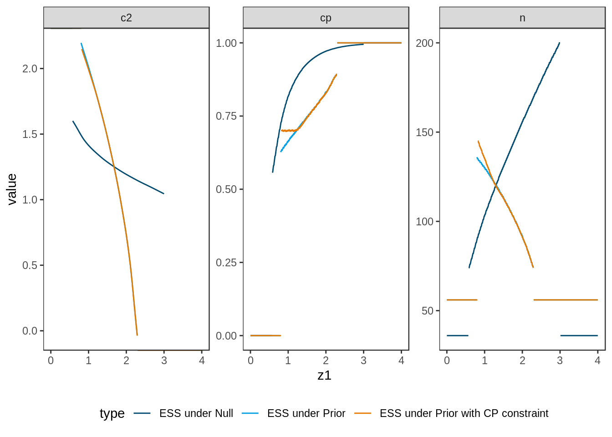

2 Scenario I: large effect, point alternative
2.1 Details
In this scenario an alternative effect size of \(\delta = 0.4\) with
point prior distribution is investigated.
The null hypothesis is \(\delta \leq 0\).
Currently, adoptr only supports normal distributed data what is widely spread
in the development of adaptive designs.
We protect the one-sided type one error rate at \(\alpha = 0.025\) and require
the power of the design to be at least \(1 - \beta = 0.8\).
2.1.1 Data distribution
Two-armed trial with normally distributed test statistic
datadist <- Normal(two_armed = TRUE)2.1.2 Null hypothesis
The null hypothesis is \(\mathcal{H}_0:\delta \leq 0\)
H_0 <- PointMassPrior(.0, 1)2.1.3 Prior assumptions
A point mass prior with probability mass on \(\delta = 0.4\) is assumed.
prior <- PointMassPrior(.4, 1)2.2 Case I-1: Minimizing Expected Sample Size under Point Prior
2.2.1 Objective
Expected sample size under the respective prior is minimized, i.e., \(\boldsymbol{E}\big[n(\mathcal{D})\big]\).
ess <- expected(ConditionalSampleSize(datadist, prior))2.2.2 Constrains
The type one error rate is controlled at \(0.025\) on the boundary of the null hypothesis.
toer_cnstr <- expected(ConditionalPower(datadist, H_0)) <= .025Power must be larger than \(0.8\).
pow_cnstr <- expected(ConditionalPower(datadist, prior)) >= .82.2.3 Initial Design
adoptr requires the definition of an initial design for optimization.
We start with a group-sequential design from the package rpact that
fulfills these constraints and is used later for comparison.
The order of integration is set to
order <- 7LFor usage as two-stage design with variable sample size, it has to
be converted to a TwoStageDesign.
init_design_gs <- rpact_design(0.4, 0.025, 0.8, TRUE, order)
init_design <- TwoStageDesign(init_design_gs)2.2.4 Optimization
The optimal design is computed in three variants: two-stage, group-sequential and one-stage. The input only differs with regard to the initial design.
opt_design <- function(initial_design) {
minimize(
ess,
subject_to(
toer_cnstr,
pow_cnstr
),
initial_design = initial_design,
opts = opts
)
}
opt1_ts <- opt_design(init_design)
opt1_gs <- opt_design(init_design_gs)
opt1_os <- opt_design(OneStageDesign(200, 2.0))2.2.5 Test Cases
Check if the optimization algorithm converged in all cases.
iters <- sapply(list(opt1_ts, opt1_gs, opt1_os),
function(x) x$nloptr_return$iterations)
print(iters)## [1] 3571 1027 24testthat::expect_true(all(iters < opts$maxeval))The \(n_2\) function of the optimal two-stage design is expected to be monotonously decreasing.
testthat::expect_equal(
sign(diff(opt1_ts$design@n2_pivots)),
rep(-1, (order - 1))
)Type one error rate constraint is tested for the three designs. Due to numerical issues we allow a realtive error of \(2\%\).
tmp <- sapply(list(opt1_ts, opt1_gs, opt1_os),
function(x) sim_pr_reject(x$design, .0, datadist))
df_toer <- data.frame(
toer = as.numeric(tmp[1, ]),
se = as.numeric(tmp[2, ])
)
rm(tmp)
testthat::expect_true(all(df_toer$toer <= .025*(1.02)))
df_toer## toer se
## 1 0.024952 0.0001559789
## 2 0.024978 0.0001560581
## 3 0.025116 0.0001564775The power constraint can also be tested via simulation. Due to numerical issues we allow a realtive error of \(2\%\).
tmp <- sapply(list(opt1_ts, opt1_gs, opt1_os),
function(x) sim_pr_reject(x$design, .4, datadist))
df_pow <- data.frame(
pow = as.numeric(tmp[1, ]),
se = as.numeric(tmp[2, ])
)
rm(tmp)
testthat::expect_true(all(df_pow$pow >= .8 * (1 - 0.02)))
df_pow## pow se
## 1 0.798641 0.0004010159
## 2 0.799669 0.0004002482
## 3 0.799317 0.0004005115The expected sample sizes should be ordered in a specific way.
testthat::expect_gte(
evaluate(ess, opt1_os$design),
evaluate(ess, opt1_gs$design)
)
testthat::expect_gte(
evaluate(ess, init_design_gs),
evaluate(ess, opt1_gs$design)
)
testthat::expect_gte(
evaluate(ess, opt1_gs$design),
evaluate(ess, opt1_ts$design)
)The expected sample size of the optimal designs is simulated and compared
to the outomce of adoptr::evaluate().
The tolerance is set to \(0.5\) what is due to rounding one patient per group
in the worst case.
ess_0 <- expected(ConditionalSampleSize(datadist, H_0))
testthat::expect_equal(
sim_n(opt1_os$design, .0, datadist),
evaluate(ess_0, opt1_os$design),
tolerance = .5
)
testthat::expect_equal(
sim_n(opt1_gs$design, .0, datadist),
evaluate(ess_0, opt1_gs$design),
tolerance = .5
)
testthat::expect_equal(
sim_n(opt1_ts$design, .0, datadist),
evaluate(ess_0, opt1_ts$design),
tolerance = .5
)Additionally, the sample sizes under the point prior are compared.
testthat::expect_equal(
sim_n(opt1_os$design, .4, datadist),
evaluate(ess, opt1_os$design),
tolerance = .5
)
testthat::expect_equal(
sim_n(opt1_gs$design, .4, datadist),
evaluate(ess, opt1_gs$design),
tolerance = .5
)
testthat::expect_equal(
sim_n(opt1_ts$design, .4, datadist),
evaluate(ess, opt1_ts$design),
tolerance = .5
)2.3 Case I-2: Minimizing Expected Sample Size under Null Hypothesis
2.3.1 Objective
Expected sample size under the null hypothesis prior is minimized, i.e.,
ess_0 <- expected(ConditionalSampleSize(datadist, H_0))2.3.2 Constrains
The constraints remain the same as before.
2.3.3 Initial Design
For runtime issues the previous initial design has to be updated. It turns out that a constant \(c_2\)-starting value is much more efficient in this case. Furthermore, a more strict upper-boundary design than the default one needs to be defined because stopping for efficacy would otherwise only happen for very large values of \(x_1\) due to optimization under the null hypothesis.
init_design_2 <- init_design
init_design_2@c2_pivots <- rep(2, order)
ub_design <- TwoStageDesign(
opt1_os$design@n1,
opt1_os$design@c1f,
3,
rep(300, order),
rep(3.0, order)
)2.3.4 Optimization
The optimal two-stage design is computed.
opt2_ts <- minimize(
ess_0,
subject_to(
toer_cnstr,
pow_cnstr
),
initial_design = init_design_2,
upper_boundary_design = ub_design,
opts = opts
)## Warning in minimize(ess_0, subject_to(toer_cnstr, pow_cnstr),
## initial_design = init_design_2, : initial design is infeasible!2.3.5 Test Cases
Check if the optimization algorithm converged.
print(opt2_ts$nloptr_return$iterations)## [1] 17730testthat::expect_true(opt2_ts$nloptr_return$iterations < opts$maxeval)The \(n_2\) function of the optimal two-stage design is expected to be monotnously increasing.
testthat::expect_equal(
sign(diff(opt2_ts$design@n2_pivots)),
rep(1, (order - 1))
)Type one error rate constraint is tested for the optimal design. Due to numerical issues we allow a realtive error of \(2\%\).
tmp <- sim_pr_reject(opt2_ts$design, .0, datadist)
df_toer2 <- data.frame(
toer = as.numeric(tmp[1]),
se = as.numeric(tmp[2])
)
rm(tmp)
testthat::expect_true(all(df_toer2$toer <= .025*(1.02)))
df_toer2## toer se
## 1 0.024971 0.0001560368The power constraint can also be tested via simulation. Due to numerical issues we allow a realtive error of \(2\%\).
tmp <- sim_pr_reject(opt2_ts$design, .4, datadist)
df_pow2 <- data.frame(
pow = as.numeric(tmp[1]),
se = as.numeric(tmp[2])
)
rm(tmp)
testthat::expect_true(all(df_pow2$pow >= .8 * (1 - 0.02)))
df_pow2## pow se
## 1 0.801749 0.0003986825The expected sample size under the null should be lower than the ess under the
null of the initial design derived from rpact.
testthat::expect_gte(
evaluate(ess_0, init_design),
evaluate(ess_0, opt2_ts$design)
)The expected sample size of the optimal designs is simulated and compared
to the outomce of adoptr::evaluate().
The tolerance is set to \(0.5\) what is due to rounding one patient per group
in the worst case.
testthat::expect_equal(
sim_n(opt2_ts$design, .0, datadist),
evaluate(ess_0, opt2_ts$design),
tolerance = .5
)Additionally, the sample sizes under the point prior are compared.
testthat::expect_equal(
sim_n(opt2_ts$design, .4, datadist),
evaluate(ess, opt2_ts$design),
tolerance = .5
)2.4 Case I-3: Conditional Power Constraint
2.4.1 Objective
Expected sample size under the point prior is minimized and has already been defined.
2.4.2 Constrains
The constraints remain the same as before, additionally to a constraint on conditional power.
cp <- ConditionalPower(datadist, prior)
cp_cnstr <- cp >= .72.4.3 Initial Design
The previous initial design can still be applied.
2.4.4 Optimization
The optimal two-stage design is computed.
opt3_ts <- minimize(
ess,
subject_to(
toer_cnstr,
pow_cnstr,
cp_cnstr
),
initial_design = init_design,
opts = opts
)## Warning in minimize(ess, subject_to(toer_cnstr, pow_cnstr, cp_cnstr),
## initial_design = init_design, : initial design is infeasible!2.4.5 Test Cases
Check if the optimization algorithm converged.
print(opt3_ts$nloptr_return$iterations)## [1] 3183testthat::expect_true(opt3_ts$nloptr_return$iterations < opts$maxeval)Type one error rate constraint is tested for the optimal design. Due to numerical issues we allow a realtive error of \(2\%\).
tmp <- sim_pr_reject(opt3_ts$design, .0, datadist)
df_toer3 <- data.frame(
toer = as.numeric(tmp[1]),
se = as.numeric(tmp[2])
)
rm(tmp)
testthat::expect_true(all(df_toer3$toer <= .025*(1.02)))
df_toer3## toer se
## 1 0.024961 0.0001560063The power constraint can also be tested via simulation. Due to numerical issues we allow a realtive error of \(2\%\).
tmp <- sim_pr_reject(opt3_ts$design, .4, datadist)
df_pow3 <- data.frame(
pow = as.numeric(tmp[1]),
se = as.numeric(tmp[2])
)
rm(tmp)
testthat::expect_true(all(df_pow3$pow >= .8 * (1 - 0.02)))
df_pow3## pow se
## 1 0.798915 0.0004008117The expected sample size under the prior should be higher than in the case without the constraint that was analyzed in I.1.
testthat::expect_gte(
evaluate(ess, opt3_ts$design),
evaluate(ess, opt1_ts$design)
)The conditional power constraint needs to be tested. Select three points for this and check the constraint.
x <- adoptr:::scaled_integration_pivots(opt3_ts$design)[c(1, 3, 5)]
cp_val <- sapply(x, function(z) evaluate(cp, opt3_ts$design, z))
testthat::expect_true(all(cp_val >= 0.7))2.5 Plot Two-Stage Designs
The optimal two-stage designs stemming from the different variants are plotted together.
